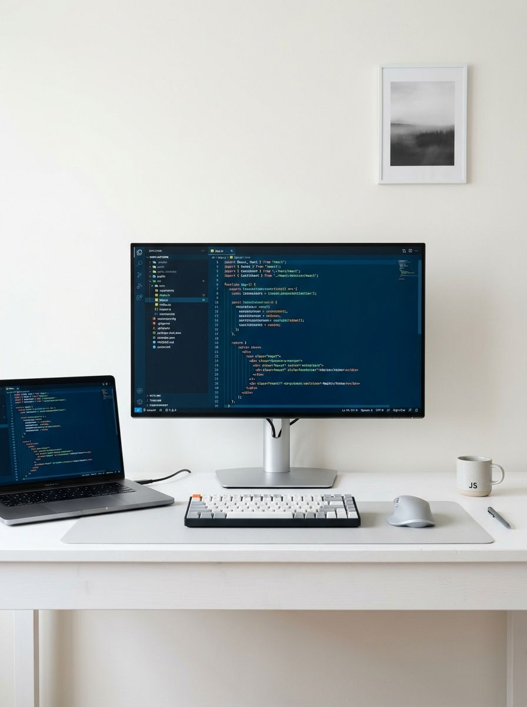

DESARROLLADOR WEB & AI MAKER
Desarrollo soluciones digitales, conecto herramientas mediante IA y construyo integraciones y automatizaciones para transformar ideas en aplicaciones funcionales.

DESARROLLO
& VISIÓN DIGITAL
Soy Rubén Pérez, desarrollador web con más de 5 años de experiencia participando en proyectos para agencias y empresas con diversas tecnologías. Actualmente estoy especialmente interesado en la aplicación práctica de la inteligencia artificial al desarrollo de software, la automatización y la creación de herramientas personalizadas.
Trabajo en mi día a día con herramientas como Claude Code, ChatGPT y Google Antigravity, y desarrollo conectores MCP e integraciones que permiten a los asistentes de IA interactuar con servicios externos y participar en flujos de trabajo reales.
Me gusta explorar nuevas posibilidades, experimentar con tecnologías y transformar ideas en soluciones funcionales que aporten valor. Mi valor está en la mentalidad maker, la integración ágil de herramientas y la creación de software útil.
Arquitectura de Conexión MCP
Esquema de comunicación estandarizado para conectar modelos conversacionales con servicios externos y ejecutar acciones en sistemas reales.
Asistentes de IA
- Claude Desktop
- Claude Code CLI
- ChatGPT
- Google Antigravity
Servidor MCP Personalizado
- Definición de Tools & Schemas
- Control y Validación de Parámetros
- Mapeo de Acciones a APIs REST
- Estructuración de Respuestas
Sistemas Conectados
- Calendly (Citas y Reuniones)
- tl;dv (Actas y Transcripciones)
- Correo Electrónico (Email)
- Hostinger Cloud (Webs & Hosting)
- GA4 & Google Search Console
Gestión de Citas y Reuniones
Conectores e integración con Calendly para consultar disponibilidad y agendar reuniones interactivamente desde asistentes de IA, acercando la gestión de agendas a una interfaz conversacional.
Actas y Síntesis de Reuniones
Integración con tl;dv para procesar transcripciones extensas de videollamadas y transformarlas automáticamente en actas estructuradas, acuerdos clave y tareas pendientes accionables.
Integraciones de Correo
Conectores relacionados con herramientas de email para facilitar la interacción con servicios de correo desde asistentes de IA, conectando la comunicación con flujos de trabajo conversacionales.
Despliegue y Gestión Web
Integraciones con Hostinger para conectar asistentes de IA con procesos de publicación, aprovisionamiento y gestión de proyectos web (WordPress, React, Astro), agilizando el ciclo de despliegue.
Analítica y Search Console
Conectores para consultar métricas, analizar el rendimiento de páginas web y generar informes ejecutivos sobre tráfico orgánico, impresiones e indexación de forma conversacional.
Lenguajes
Frameworks y Entornos
CMS & Herramientas Web
Herramientas & Analítica
PROYECTOS & SOLUCIONES REALES
Una cuidada selección de herramientas con IA, conectores MCP, proyectos web corporativos y componentes de alta fidelidad.
Conectores MCP e Integraciones de Asistentes
Herramientas MCP para conectar Claude y ChatGPT con Calendly, tl;dv, email, Hostinger y analítica web en tiempo real.
Skills Personalizadas & Flujos de Automatización
Diseño de instrucciones y procedimientos estructurados para adaptar asistentes de IA a tareas de desarrollo y procesos de equipo.
iHodei — Agencia Marketing
Sitio web corporativo en WordPress para agencia de marketing digital con diseño moderno, video banner y SEO.
José Luis Breva
Sitio web corporativo para estudio de arquitectura y diseño con galerías interactivas de alto impacto.
Zenthia Capital
Plataforma web corporativa para firma de inversión con interfaz refinada y widgets a medida.
Sopela Beach Home
Sitio web de alquiler vacacional de lujo en Sopela con motor de reservas y diseño elegante.
TRAYECTORIA
& EXPERIENCIA
Un recorrido profesional colaborando con agencias de marketing digital, consultoras tecnológicas y entornos corporativos en España. Mi perfil combina la solidez del desarrollo web con la mentalidad maker para construir soluciones e integraciones con IA que optimizan flujos reales de trabajo.
HODEICLOUD (iHodei)
2023 – ActualidadDesarrollo de proyectos web y creación de sitios con WordPress, maquetación responsive, desarrollo de plugins y temas personalizados. Investigación e implementación de conectores MCP y soluciones de IA con Claude y Antigravity, integrando servicios como Calendly, tl;dv, Hostinger y Google Analytics para la automatización de procesos operativos.
WORKOHOLICS
2022Desarrollo de componentes en Angular para marcas líderes de telecomunicaciones (Grupo MásMóvil, Yoigo, Virgin Telco, Guuk). Enfoque Mobile First y arquitectura limpia.
ELIM5 (ADP)
2019Diseño y maquetación de Landing Pages interactivas con JavaScript, HTML5, CSS3 y Bootstrap bajo estrictos estándares de accesibilidad y buenas prácticas.
CONTACTO PROFESIONAL
¿Buscas un perfil AI Maker, desarrollador de soluciones con IA o desarrollo web para tu equipo o proyecto? Hablemos.
Información de Contacto
Respondo habitualmente en menos de 24 horas laborables.
Envíame un mensaje
Cuéntame los detalles de tu propuesta o necesidad técnica.